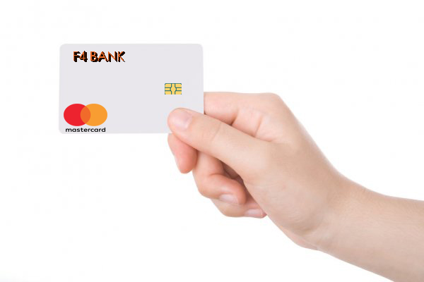

A conta digital que vai levar você ao controle da sua vida financeira.
Nossos valores e ideais que nos movem, todos os dias, para oferecer a você produtos e serviços que proporcionem mais tranquilidade, segurança e conveniência.

Por que abrir uma conta digital no F4 Bank?
Pague no débito em diversos sites e aplicativos com segurança e praticidade.
Você já pode fazer compras em diversas plataformas online e pagar com o cartão na função débito direto nos seus sites e aplicativos favoritos.
Ganhe tempo, faça pagamentos por aproximação.
O F4 Bank é ainda mais prático com a função contactless. Não precisa inserir cartão na maquininha, nem colocar a senha. De quebra, ainda evita contato com dinheiro.
Preço baixo
Temos Seguro Residencial com parcelas a partir de R$ 15 por mês e você ainda ganha desconto se contratar por mais de um ano..
O seguro ideal, pra você proteger o que realmente importa.
Uma plataforma com opções de seguros para o seu momento, com várias modalidades, pra você, sua família e sua empresa.
Organize sua vida financeira aqui!
Usando nossos serviços, você aprende a fazer muito mais com o seu dinheiro. Taxas desnecessárias? Nem pensar! Transferências grátis, investimentos a partir de R$ 10, compras online sem precisar passar por uma aprovação de crédito,
pagamentos de contas e muito mais? É pra já!
Cartão de crédito sem anuidade
Você só paga o que gastar e pode pedir o seu direto no app F4 Bank.
-Cartão virtual
-Débito automático
-Controle simplificado
COMODIDADE EM SUAS MÃOS

Cartão de Crédito
O cartão do F4Bank é um cartão de crédito sem anuidades, com a bandeira Mastercard e que é totalmente controlado pelo smartphone, através do app F4Bank – é possível pedir aumento do limite, mudar a data de vencimento da fatura, bloquear
e desbloquear o cartão, ativar o aviso viagem, entre outras coisas.
Conta PJ
Uma conta digital focada em pessoas jurídicas e pequenas empresas. A versão inicial da nossa conta PJ terá algumas funções similares às oferecidas que a F4Conta oferece – como transferências gratuitas para outros bancos e entre contas
do F4 Bank, pagamento de boletos e tributos, depósito via boleto e a função “cobrar dinheiro“.
Conta Digital
-Rendimento automático de 100% do CDI: taxa maior que a da poupança, mesmo com a cobrança de IR e IOF.
-Cartão com a função débito para fazer compras com o saldo da F4Conta. Se você quiser ter um cartão com a função débito ligado a sua F4Conta, basta solicitar o seu através do nosso aplicativo – não cobraremos nada por isso.
-Transferências ilimitadas e gratuitas para outros bancos (TED) e outras F4Contas.
Empréstimo
Pra tudo que você imaginar, o F4 Bank tem a solução. Conheça os empréstimos e as linhas de crédito pessoal disponíveis, aproveite a carência para se planejar e comece a pagar a primeira parcela em até 180 dias*.